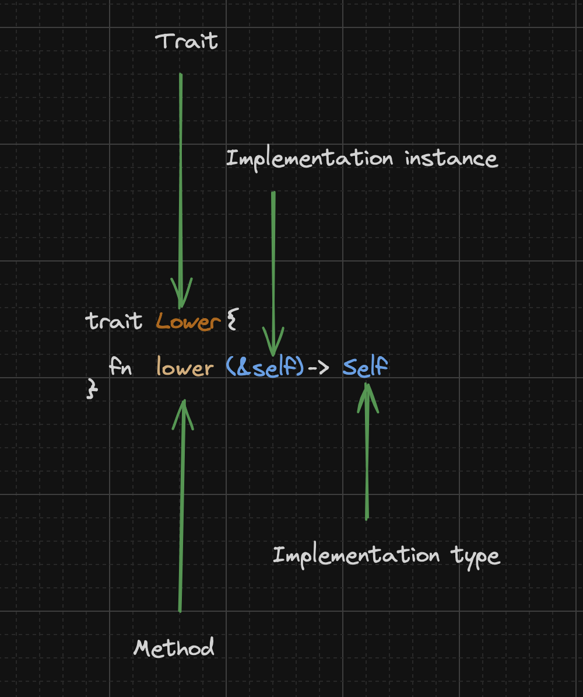
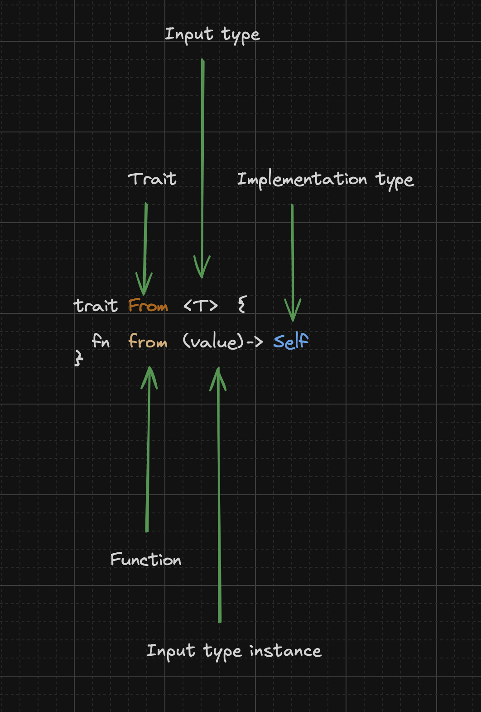

How to call trait functions in Rust
Traits define a group of functions that work towards some shared behaviour. There are a few ways to invoke trait functions in Rust and we’ll have a look at those ways in the sections below.
Traits have two types of functions:
- Methods - These are functions that take in a
selfparameter - Associated Functions - These are functions that do not take a
selfparameter
How to invoke Functions of a Trait
Here are the standard ways of invoking trait functions:
- Using an instance of the implementing type of the trait (for methods)
- Using the type that implements the trait
- Using the trait
- Using the fully qualified implementation path to the function
An Example
Let’s take the following trait that converts a type to its lowercase equivalent as an example:
trait Lower {
fn lower(&self) -> Self;
}
Using the above trait, we can convert from an implementing type to a lowercase version of itself.
In summary:
Implementation type: Self
Trait: `Lower`
Method: `lower`
Function parameter type: `&self`Given, a simple wrapper type Identifier over a String:
struct Identifier(String);And an implementation for the Lower trait for Identifier:
impl Lower for Identifier {
fn lower(&self) -> Self {
Self(self.0.to_lowercase())
}
}How do we go about invoking the functions on the Lower trait?
Using an instance of the implementing type of the trait
This only works for trait methods; functions that take in a
selfparameter.
The format of calling a function on a implementation instance is:
<implementation type instance>.function(param)In our case:
Implementation type: `Identifier`
Function: `lower`
Function parameter: `&self` // This is needed for us to call the function on the instanceGiven an instance of an Identifier:
// Create an Identifier instance
let id_string = String::from("012BCE5");
let id = Identifier(id_string)We can call the lower method on an instance of Identifier as follows:
let id1 = id.lower();Using the type that implements the trait
The format of calling a function on a type is:
<Implementation type>::function(param)In our case:
Implementation type: `Identifier`
Function: `lower`
Function parameter: `&self`Which gives us:
Identifier::lower(&id)Using the trait
The format of calling a function on a trait is:
<trait>::function(param)In our case:
Trait: `Lower`
Function: `lower`
Function parameter: `&self` // Any implementation type of LowerWhich gives us:
Lower::lower(&id)Using the fully qualified implementation path to the function
The format of calling the fully qualified path to the function on a trait is:
<Implementation Type as Trait>::function(param)In our case:
Implementation Type: Identifier
Trait: `Lower`
Function: `lower`
Function parameter: `&self` // Accepts only `Identifier` since we are using the fully qualified pathWhich gives us:
<Identifier as Lower>::lower(&id)Using From
Now that we know the basics of calling trait functions, let’s look at how we can use the From trait from the std library.
From is defined as:
pub trait From<T>: Sized {
/// Converts to this type from the input type.
fn from(value: T) -> Self;
}
Using the above trait, we can convert from a value of some source type T to the implementing type (Self). The trait function
in this case is the from function. We can think of the from function as going from a type T -> Self.
We don’t have a
selfparameter on thefromfunction. This will restrict how we can call this function.
In summary:
Implementation type: Self (Depends on the implementing type)
Trait: `From`
Function: from
Function parameter type: `T` (Source type)Let’s implement the From trait for Identifier, so that it converts a String to an Identifier:
impl From<String> for Identifier {
fn from(value: String) -> Self {
Identifier(value)
}
}In summary:
Implementation type: `Identifier`
Trait: `From<T>`, where `T` is `String`
Function: `from`
Function parameter: `String`Using an instance of the implementing type of the trait
The format of calling a function on an implementation instance is:
<Implementation instance>.function(param)In our case:
Implementation type: `Identifier`
Parameter type: `String`
Function: `from`
Function parameter: `String`As mentioned previously as we don’t have a self parameter to this function, we can’t use it on the instance of the
implementation type.
Now while it would seem that we can’t do the conversion from String -> Identifier via an instance, Rust has some
supports that lets us do that.
Rust implements the Into trait for each implementation of the From trait for free. The Into trait is defined as:
pub trait Into<T>: Sized {
/// Converts this type into the (usually inferred) input type.
fn into(self) -> T;
}If you define From for a type, you get Into for that same type by the compiler with the following implementation:
impl<T, U> Into<U> for T
where
U: From<T>,
{
/// Calls `U::from(self)`.
///
/// That is, this conversion is whatever the implementation of
/// <code>[From]<T> for U</code> chooses to do.
fn into(self) -> U {
U::from(self)
}
}In summary:
Implementation type: `T`
Trait: Into<U> // where U is the implementer of `From<T>`
Function: into
Function parameter: selfIn our case for converting from String -> Identifier:
Implementation type: `String`
Trait: Into<Identifier>
Function: into
Function parameter: StringThe implementation above, takes two type parameters: T and U. The U should have a From implementation for T and if it does, when calling the into method on an instance of self, invokes the conversion from T -> U through U::from(self).
Don’t worry if this doesn’t make sense just yet, but try to remember that if you implement the
Fromtrait you get a freeintofunction that you can invoke on an instance of the parameter type of thefromfunction.
Given that the into function takes a self reference, and in our example self is a String, we can call it on a String instance:
let id1: Identifier = id_string.into();The above works! Yay!
If we leave off the Identifier type annotation on id1:
let id1 = id_string.into();We get the following compilation error:
error[E0283]: type annotations needed
--> src/main.rs:138:9
|
138 | let id1 = id_string.into();
| ^^^ ---- type must be known at this point
|
note: multiple `impl`s satisfying `_: From<String>` found
--> src/main.rs:84:1
|
84 | impl From<String> for Identifier {
| ^^^^^^^^^^^^^^^^^^^^^^^^^^^^^^^^
= note: and more `impl`s found in the following crates: `alloc`, `std`:
- impl From<String> for Arc<str>;
- impl From<String> for Box<(dyn std::error::Error + 'static)>;
- impl From<String> for Box<(dyn std::error::Error + Send + Sync + 'static)>;
- impl From<String> for Box<str>;
- impl From<String> for OsString;
- impl From<String> for PathBuf;
- impl From<String> for Rc<str>;
- impl From<String> for Vec<u8>;
= note: required for `String` to implement `Into<_>`
help: consider giving `id1` an explicit type
|
138 | let id1: /* Type */ = id_string.into();
| ++++++++++++
For more information about this error, try `rustc --explain E0283`.The compiler is letting us know that there are many From implementations for String and we need to give it a hint on
which one we want to use:
help: consider giving `id1` an explicit type
|
138 | let id1: /* Type */ = id_string.into();
| ++++++++++++Using the type that implements the trait
The format of calling a function on a type is:
<Implementation type>::function(param)In our case:
Implementation type: `Identifier`
Function: `from`
Function parameter: `String`Running the conversion:
let id2 = Identifier::from(id_string)We don’t need to be explicit about the type of id2 as the compiler can figure out what the type is.
Using the trait
The format of calling a function on a trait is:
<trait>::function(param)In our case:
Trait: `From<String>`
Function: `from`
Function parameter: `String`Running the conversion:
let id3: Identifier = From::from(id_string);If we leave out the type of id3 we get the following compilation error:
error[E0790]: cannot call associated function on trait without specifying the corresponding `impl` type
--> src/main.rs:144:15
|
144 | let id3 = From::from(id_string);
| ^^^^^^^^^^^^^^^^^^^^^^^^^^^^^ cannot call associated function of trait
|
help: use a fully-qualified path to a specific available implementation
|
144 | let id3 = </* self type */ as From>::from(id_string);
| +++++++++++++++++++ +
For more information about this error, try `rustc --explain E0790`.Given there are multiple From instances in scope, the compiler can’t narrow it down until we give it more information.
The compilation error hints at using the full qualified path to the implementation (type as trait) format:
help: use a fully-qualified path to a specific available implementation
|
144 | let id3 = </* self type */ as From>::from(id_string);
| +++++++++++++++++++ +We’ll look at that next.
Using the fully qualified implementation path to the function
The format for using the fully qualified path to the implementation is:
<implementation type as trait>::function(param)In our case:
Implementation type: `Identifier`
Trait: `From<String>`
Function: from
Function parameter: `String`let id4 = <Identifier as From<String>>::from(id_string);And in the above case as well, we can leave off the type of id4 because we have been explicit as possible about which
implementation of From to use.